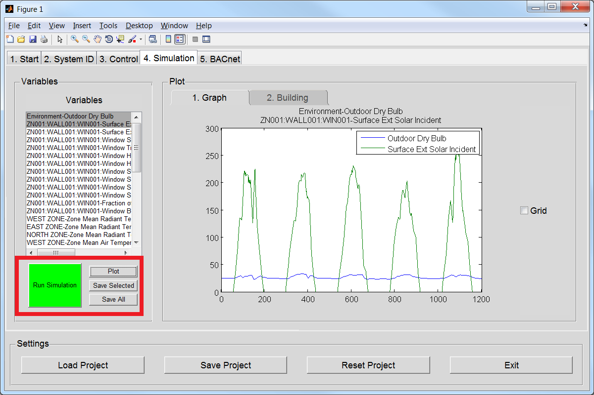

In the following tutorial example, we will walk you through the steps to set up a co-simulation session with EnergyPlus from Matlab. We will then design a controller in MLE+ for actuating the window blinds of a building simulated in EnergyPlus. You can download a pdf version here. This tutorial is also included in the MLE+ distribution.
1. Building
A single-storied building shown in Figure 1 consists of three zones with a total floor area of 130m2. The West zone of the building consists of a large window equipped with blinds/shades and is subject to strong solar radiation during the day. The goal is to control the window shade deployment of the West zone such that the transmitted solar radiation 4 (through the window) never exceeds a certain threshold. The window blinds can be controlled using two EnergyPlus variables:
- Shading_Deployment_Status controls whether the blinds are deployed or not;
- ShadeAngle_Schedule controls the slat angle so it is perpendicular to the incident solar radiation whenever the blinds are deployed.
We will design a controller in MLE+ which monitors the angle and intensity of the solar radiation incident on the West zone window. If the incident solar radiation exceeds a certain threshold, the blinds will be deployed and the shade angle will be set to reduce the possibility of glare.
2. The MLE+ Control Design Workflow
The control design workflow of MLE+ defines a sequence of steps for designing a controller in Matlab for a building model simulated by EnergyPlus. A graphical front-end is provided to support this workflow. To start the front-end, execute the command mlep in Matlab. This will open a graphical interface as shown in Figure 4.
3. Set Up EnergyPlus Simulation Model
First, we need to specify the EnergyPlus building model and the weather profile to be used for simulation (Figure 4).
- Click the button Select IDF file and select the file EMSWindowShadeControl.idf located in the folder C:\software\mlep\ShadingProject.
- Click the button Select weather file and select the weather file USA_IL_Chicago-OHare.Intl.AP.725300.We will use the weather profile of Chicago for our simulation.
4. Configure Input and Output Variables Between EnergyPlus and Matlab
We will set up the input and output variables to be exchanged between EnergyPlus andMatlab for co-simulation. An input variable serves as an input to EnergyPlus at each stepof the co-simulation, while output variables are those which can be repeatedly read fromEnergyPlus to monitor its internal state.
- Select the Control Tab (Figure 4)
- In the Control Tab, push the Variable button to open the Variable Configuration Window (Figure 6).
- Load the .idf file by pushing the Load IDF button. This will list the available ExternalInterface:Schedule, ExternalInterface:Actuator and ExternalInterface:Variable objects from the idf file. It will also list the available Output:Variable objects.
- Add the necessary inputs and outputs to have the settings specified in Figure 7 and Figure 8, respectively. In this example, we specify Shading_Deployment_Status and ShadeAngle_Schedule as the inputs to EnergyPlus as these are the variables that we will control through MLE+. Make sure your configuration is exactly the same as the one shown in Figure 7 and Figure 8.
- Once the input and output variables had been set, push the green buttonWrite Variables. cfg. This file will create a file with the communication configuration between Matlab and EnergyPlus. It should also be printed in the Matlab command line.
- Close the Variable Configuration Window: either click on the Close Screen button (bottom right) or the X window button.
In MLE+, an alias is specified for each of the communication variables (Figure 7 and Figure 8). The alias allows the user to reference a variable with a more intuitive name and avoid the intricate names specified by EnergyPlus. For instance, the EnergyPlus variable Zn001_Wall001_Win001_Shading_Deployment_Status can be assigned a more intuitive name as ShadeStatus.
 |
5. Design a Shading Controller
In the control tab, we will specify the controller, implemented in Matlab, for our building model (Figure 9).
- Click the button Load Control File and select the file control_file_blind_angle.m. This file contains the Matlab code for the shading controller.
- View and edit this file by clicking the button Edit Control File. You can also create a template file for your own feedback loop by clicking on Create Control File. This creates the file controlFile.m.
he input and output variables specified by the user are referred to by their aliases throughout the control file as shown in Figure 10. In the code snippet shown in Figure 10 the value of the incident solar radiation is compared against the threshold
 |
Simulation and Assessment
Once a control design has been completed, we can run the simulation or step through it\using the Matlab debugging environment.
- Click on the tab Simulate then click on button Run Simulation (Figure 11). This will call EnergyPlus to run the building energy simulation with the parameters we have specified.
- A Windows command window will open and will show the progress of the simulation.
- After the co-simulation has finished, MLE+ extracts and parses all output variables generated by EnergyPlus, then lists them in a listbox (see Figure 11). Select one or multiple variables, then click the button Plot to plot them on the screen.
- You can also save the data to the Matlab workspace by clicking the buttons Save all or Save Selected
- The building geometry is visualized in tab Building.
|  |
Note that MLE+ decouples the simulation engine and the controller implementation. This way we can tune the control scheme in Matlab, then assess its performance by running multiple simulations without the need of modifying the EnergyPlus file.
Load, Save and Reset Projects Data.
At the bottom of the window, you can find buttons to load a control design project from a file, save a project to a file, and reset the current project data. A project file has the extension .prj and contains all essential information of a control design project.
- Load Project: open previously saved projects.
- Save Project: save all the configuration settings which have been entered so far to a file. Note that this does not save your controller file, or your .idf file.
- Reset Project: empty all fields in the graphical front-end. Note that this will not erase the current project file, but only reset the configuration settings in the graphical front-end.
- Exit: exit the program.
For your convenience, a project file for the tutorial example is included in the distribution. You can load the project file ShadingProject.prj and switch directly to the tab Simulate to run a simulation of the control design.
Other Sample Projects
Legacy Example
his folder contains the original example distributed with MLE+ Legacy. This example does not make use of the MLE+ front end. You can run this example by executing runsimple.m in Matlab. This example sets the Temperature Setpoints for a small building.
Green Scheduling vs. Uncoordinated Control
Here we compared two different binary (ON/OFF) controls for keeping the temperature of a small building inside the comfort level. Green Scheduling is a control scheme designed to reduce peak power consumption while satisfying the temperature conditions. You can load these projects by using the Load Project button.
MPC vs. Proportional Control
These two cases implement continuous control schemes. The first control is a Model Predictive controller using built-in functions in Matlab. This is compared against a very simple proportional feedback loop. The model for the first strategy was generated using the System Identification tab in MLE+. This tab allows you to design the disturbances you feed your model for SYSID. Then, you can import this model directly into the Matlab’s built-in system identification toolbox.